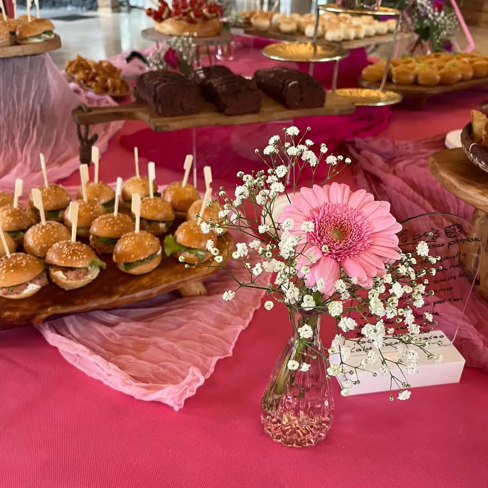
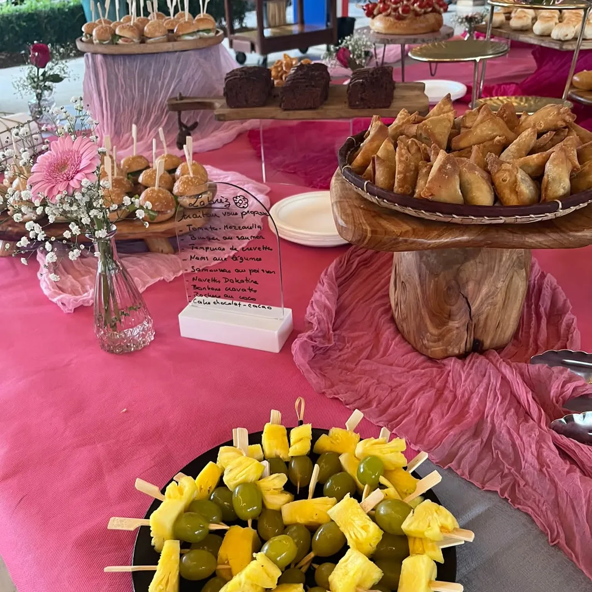
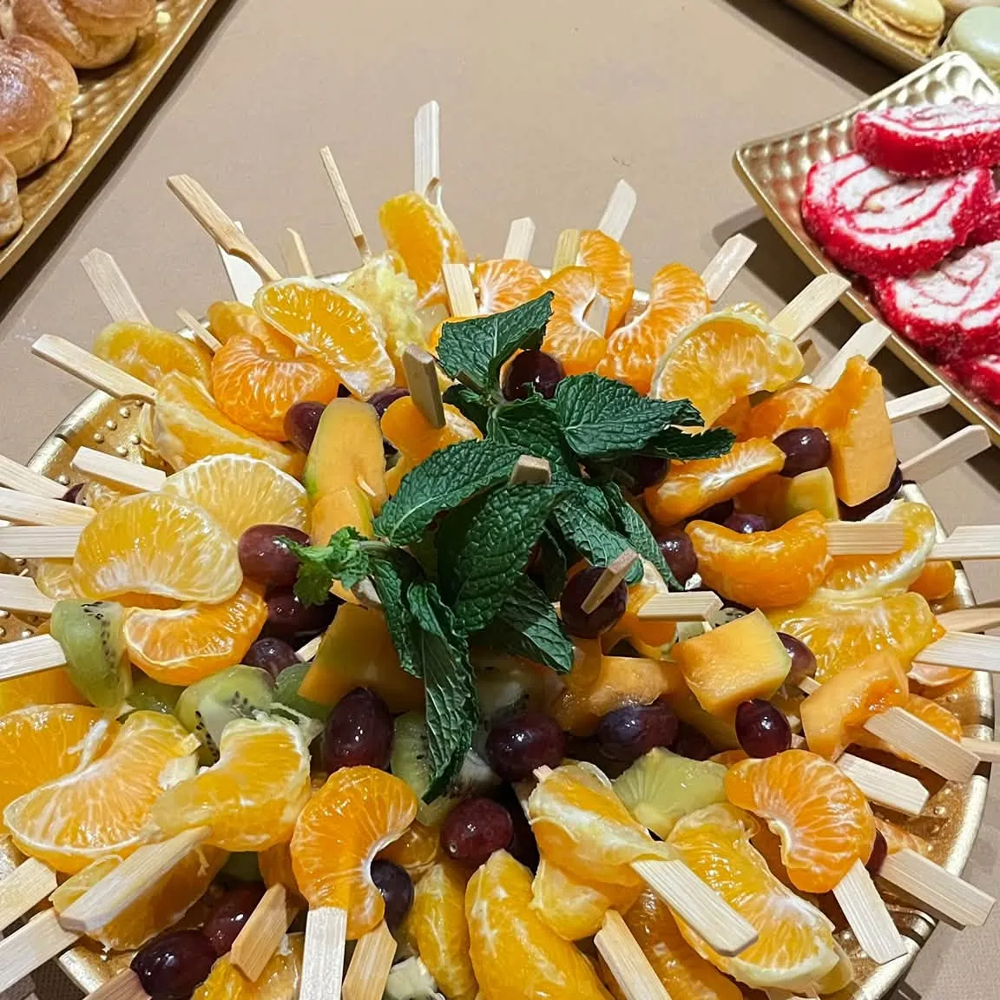
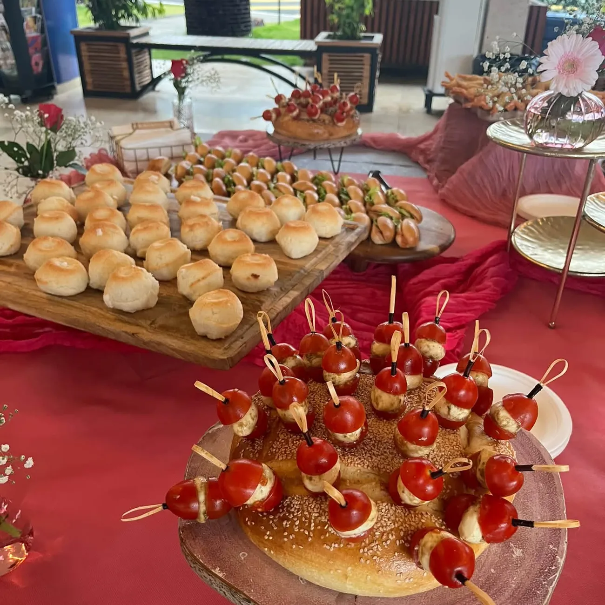
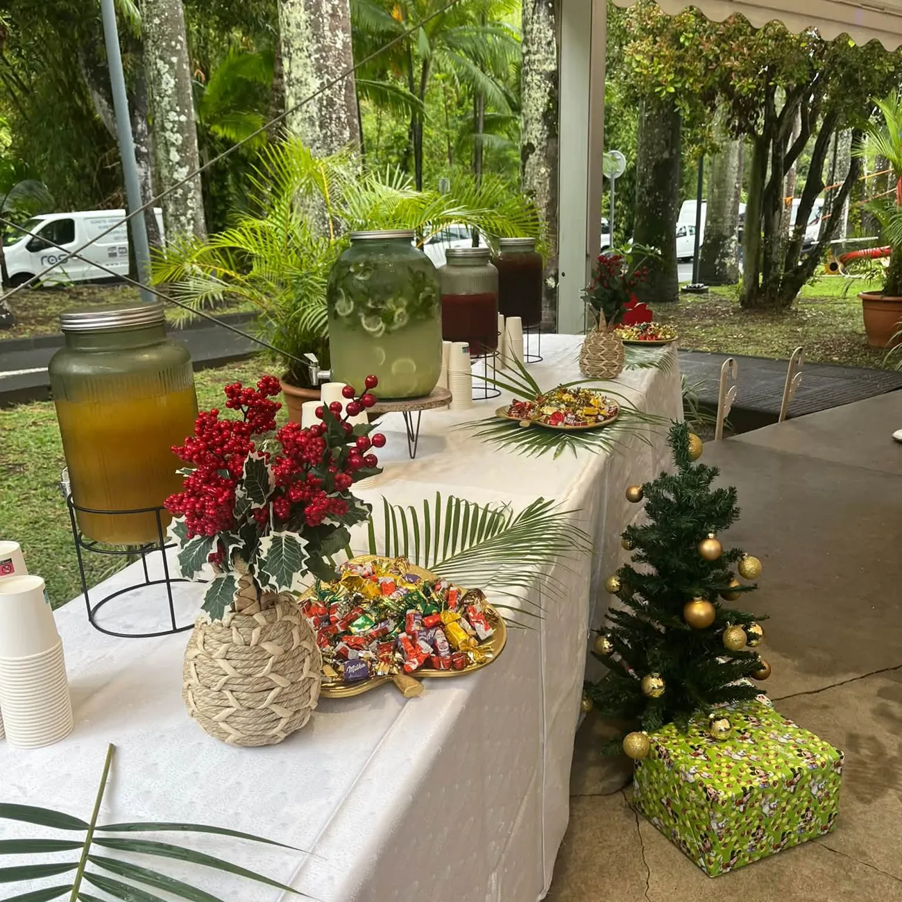
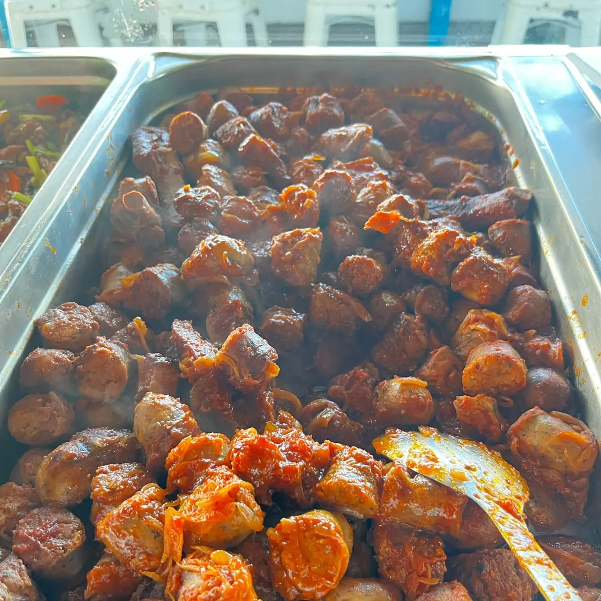
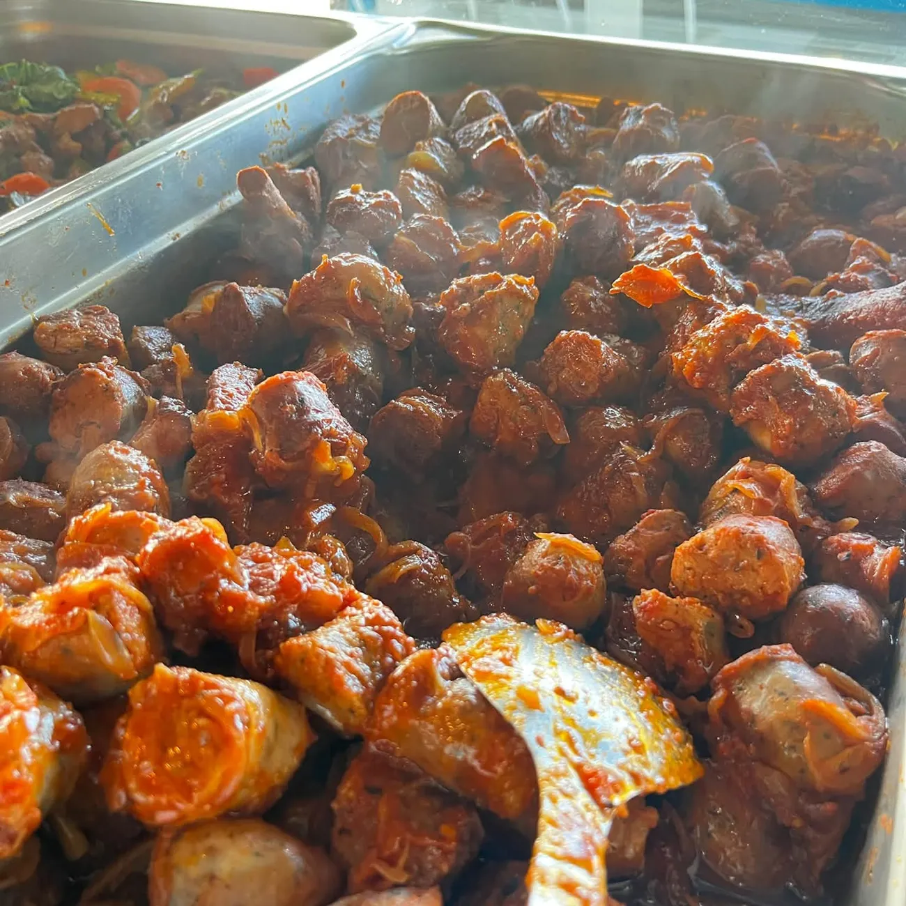
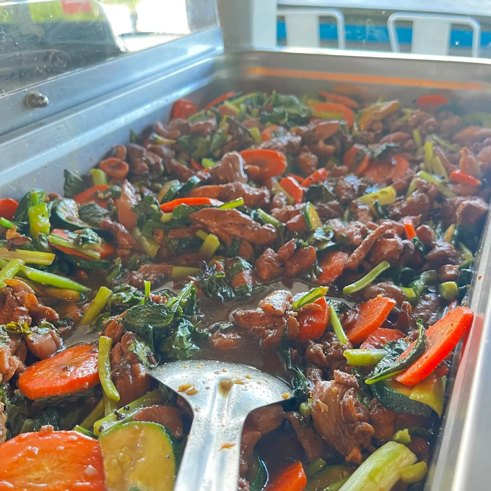

La terrasse
Au 2 rue Hélène Boucher, à deux pas du rond-point de l'aéroport Gillot : on s'installe dehors et on savoure.
Restaurant terrasse · Traiteur · Livraison
Des produits issus de la ferme Piton Fougères, une terrasse près de Gillot, et des buffets qui font la fête à chacun de vos événements.



Trois façons de se régaler
Au 2 rue Hélène Boucher, à deux pas du rond-point de l'aéroport Gillot : on s'installe dehors et on savoure.
Buffets, cocktails, bouchées maison : des tables dressées avec soin, jusqu'aux fleurs.
Vos plats préférés livrés, et le retrait sur place pour les plus pressés.
Nos tables
Chaque buffet Labrèz est pensé comme une fête : des couleurs, des fleurs, et des bouchées qui disparaissent en un clin d'œil.





Chaque semaine
Labrèz publie son menu chaque semaine. Ici, il s'afficherait automatiquement dès sa parution, pour que vos clients le trouvent en un instant, sur leur téléphone.
Cette semaine
Le menu de la semaine apparaît ici, avec un bouton pour commander directement par WhatsApp.
Un repas, un buffet pour un anniversaire, un cocktail d'entreprise : écrivez-nous, on prépare ça avec vous.